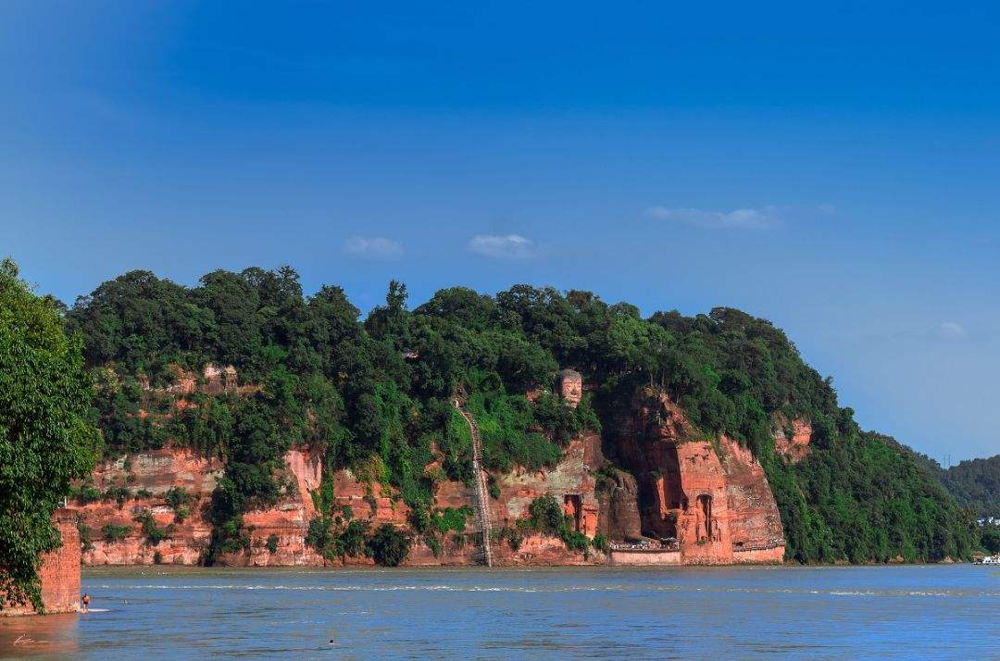

一.乐山大佛
简介：乐山大佛，又名凌云大佛，位于四川省乐山市南岷江东岸凌云寺侧，濒大渡河、青衣江和岷江三江汇流处。大佛为弥勒佛坐像，通高71米，是中国最大的一尊摩崖石刻造像。建造于唐代的这座大佛，真实的官方名称却一直是迷。事实上，根据后来诸多专家考察证实，这座被称为“乐山大佛”的石刻雕像的真实官方名称应该是：嘉州凌云寺大弥勒石像。
来历：古代的乐山三江汇流之处，岷江、青衣江、大渡河三江汇聚凌云山麓，水势相当的凶猛，舟辑至此往往被颠覆。每当夏汛，江水直捣山壁，常常造成船毁人亡的悲剧。海通禅师为减杀水势，普渡众生而发起，招集人力，物力修凿的。
佛像于唐玄宗开元初年（公元713年）开始动工，当大佛修到肩部的时候，海通和尚就去世了。海通死后，工程一度中断。多年后，剑南西川节度使章仇兼琼捐赠俸金，海通的徒弟领着工匠继续修造大佛，由于工程浩大，朝廷下令赐麻盐税款，使工程进展迅速。当乐山大佛修到膝盖的时候，续建者章仇兼琼迁家任户部尚书，工程再次停工。四十年后，剑南西川节度使韦皋捐赠俸金继续修建乐山大佛。在经三代工匠的努力之下，至唐德宗贞元十九年（公元803年），前后历经90年时间才完工。
评价：乐山大佛被世人称为“山是一尊佛，佛是一座山”，这句话形象地概括出了乐山大佛气势磅礴的特点。尤为奇特的是远眺大佛的时候，它又象一个卧佛，游客从岷江对岸眺望，只见巨佛身姿分明。仰天长卧，其壮美堪称天下一绝！
大佛主体信息：乐山大佛头与山齐，足踏大江，双手抚膝，大佛体态匀称，神势肃穆，依山凿成临江危坐。大佛通高71米，头高14.7米，头宽10米，发髻1051个 ，耳长7米，鼻长5.6米，眉长5.6米，嘴巴和眼长3.3米，颈高3米，肩宽24米，手指长8.3米，从膝盖到脚背28米，脚背宽8.5米，脚面可围坐百人以上。大佛顶上共有螺髻1051个，这是1962年维修时，以粉笔编号数清的。远看发髻与头部浑然一体，实则以石块逐个嵌就。单块螺髻根部裸露处，有明显的拼嵌裂隙，无沙浆粘接。螺髻表面抹灰两层，内层为石灰，厚度各为5-15毫米。1991年维修时，在佛像右腿凹部中拾得遗存螺髻石3块，其中两块较完整，长78厘米，顶部31.5×31.5厘米，根部24×24厘米。

二.峨眉山
简介：峨眉山（Mount Emei）位于北纬30°附近，四川省西南部，四川盆地的西南边缘 ，是中国“四大佛教名山”之一，地势陡峭，风景秀丽，素有“峨眉天下秀”之称，山上的万佛顶最高，海拔3099米，高出峨眉平原2700多米。《峨眉郡志》云：“云鬘凝翠，鬒黛遥妆，真如螓首蛾眉，细而长，美而艳也，故名峨眉山。”
峨眉山处于多种自然要素的交汇地区，区系成分复杂，生物种类丰富，特有物种繁多，保存有完整的亚热带植被体系，有植物3200多种，约占中国植物物种总数的1/10。峨眉山还是多种稀有动物的栖居地，动物种类达2300多种。山路沿途有较多猴群，常结队向游人讨食，为该山一大特色。
峨眉山是普贤菩萨的道场 ，宗教文化特别是佛教文化构成了峨眉山历史文化的主体，所有的建筑、造像、法器以及礼仪、音乐、绘画等都展示出宗教文化的浓郁气息。山上多古迹、寺庙，有报国寺、伏虎寺、洗象池、龙门洞、舍身崖、峨眉佛光等胜迹，是中国旅游、休养、避暑目的地之一。
主要寺庙：峨眉山原有大小寺院百余处，几经兴废，现存主要寺院有万年寺、报国寺、伏虎寺、善觉寺、光相寺。
万年寺，始建于晋隆安3年（399），为慧持创建，初名为普贤寺。唐僖宗时（887—888），慧通禅师重建，更名为白水寺。宋时又更名白水普贤寺。明万历二十九年（1601），神宗皇帝为给太后祝贺70大寿，赐名为圣寿万年寺。清代又加修建。1946年大火，除砖殿外，几毁坏殆尽，现在的万年寺是1954年人民政府拨款修复的。
报国寺，是峨眉山的入山第一座寺庙，始建于明万历年间（1573—1619），原名会宗堂，清初迁建于此，顺治九年重建；康熙四十二年（1703），康熙皇帝取佛经“四恩四报”中“报国主恩”之意，御题“报国寺”匾额，王藩手书；报国寺历史上经过数次修葺，寺院得以完整保存。
伏虎寺，又称伏虎禅院、神龙堂、虎溪精舍，据《峨眉山志》说，为晋时心庵和尚初建。以山形如卧虎的伏虎岭下为基地，定名伏虎寺。唐代云安禅师重建，规模渐大。南宋绍兴年间行僧心庵再建，僧士性建尊胜幢以镇虎患，改名伏虎寺，伏虎寺名也沿用至今。
善觉寺，原名降龙寺，该寺始建于明万历年间，为道德禅师开建，左与伏虎寺遥相呼应。清初，住持元亨禅师德高望重，声闻朝廷。相传清康熙皇帝游峨时，寺僧因避“真龙天子”之讳，乃改降龙院为善觉寺。康熙壬午年间（1702），康熙御题匾额“善觉寺”，“降龙院”寺名遂废。
光相寺，因峰顶的铜殿在阳光下发出光芒，故名金顶，又称“金顶寺”。相传建于东汉，原名普光殿。历代兴废不一。正殿永明华藏寺，清光绪十二年（1886）重修。殿后最高处，原有明万历三十一年（1603）所造铜铸佛殿一座，广一丈四尺五寸，深一丈三尺五寸，高二丈五尺。中安置普贤菩萨铜像，四壁铸出万佛。铜殿与华藏寺均焚于火。在铜殿遗址附近留有两座铜塔。
此外，还有大安寺、大佛禅院、华藏寺、清音阁、仙峰寺、洗象池、圣水禅院、洪椿坪等寺院。
主要景点：
万佛顶
万佛顶是中国四大佛教名山中海拔最高的风景名胜区及自然生态保护区，也是中国海拔最高的世界自然和文化遗产地。从金顶向西横行，是千佛顶。
金顶金佛
金顶是峨眉山的象征，金佛是峨眉山的标志。金顶是峨眉山景点和寺庙的汇集，48米高的四面十方普贤金像矗立在金顶。
接引殿
接引殿宋时名新店，寺位于大山之麓，海拔高度2540米。历经数次毁坏、重建，今殿于1997年落成，同年举行了开光法会。
洗象池
洗象池是峨眉山八大寺庙之一，位于峨眉山海拔2070米的钻天坡上，由仙峰寺上行25华里，明时仅为一亭，称“初喜亭”，后改建为庵，名初喜庵。
三、四川黑竹沟国家森林公园
四川黑竹沟国家森林公园位于四川乐山市峨边彝族自治县黑竹沟镇，地跨哈曲乡、勒乌乡和金岩乡。总面积838平方公里，核心景区面积575平方公里，外围保护地带263平方公里，海拔高度1500—4288米之间。黑竹沟森林公园的神奇莫测被国内外广泛称为“中国百慕大”。是国内最完整、最原始的生态群落之一。
黑竹沟森林公园划分为黑竹沟探秘揽胜区、金字塔旅游观光区和杜鹃池度假休闲区等3个浏览区。探秘揽胜区包括黑竹沟主沟三岔河流域，面积9129.1公顷。包括水景、林景、峡谷等景观，及神秘的黑竹沟浓雾。分三岔河和石门关2个景区。
四、东方佛都
东方佛都景区现所辖凌云九峰之四峰。凌云九峰，唐代“峰各有寺”，抗元战火将四峰寺庙毁去。而今的东方佛都循古迹恢复旧貌，保留唐代原有山林风貌，依山取势、高低错落、林隐千佛、洞中百窟。
乐山大佛所在的凌云九峰，唐代时“峰各有寺”《大象阁记》，后毁于元明。东方佛都循古人遗迹，以恢复唐代风貌为宗旨，荟萃了世间石刻佛像精品，为四川美院老教授们雕塑，中国雕塑大师刘开渠是顾问。
东方佛都，大小佛像万余尊，其中包括世界最大巨型卧佛，全长170米，以摩崖石刻雕像为主。依山取势，林隐千佛，洞中百窟，既展示了佛文化千年的神韵，又留下了现代人传承古人石刻雕塑艺术的足迹。